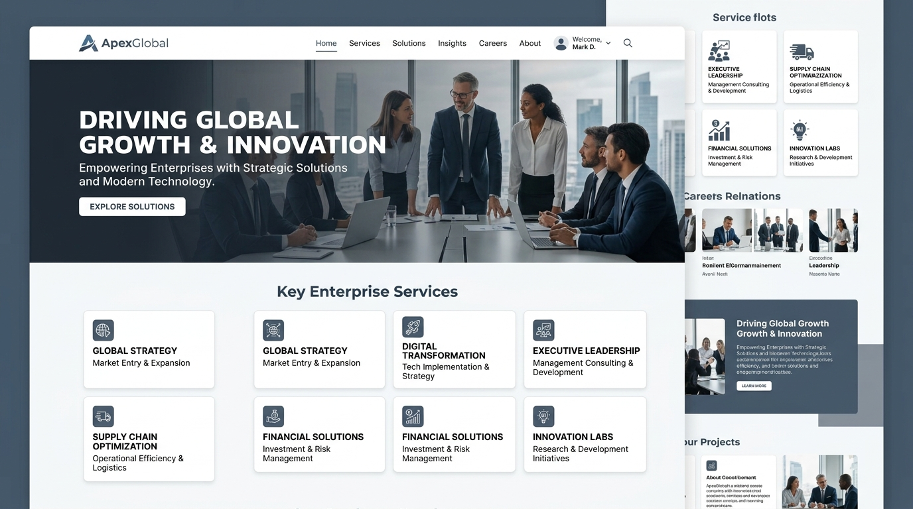
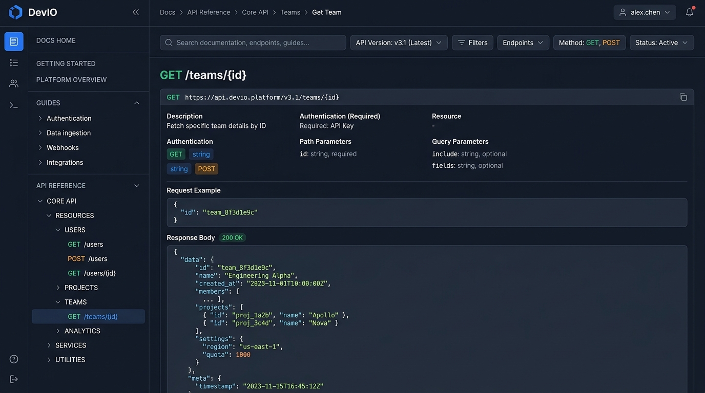
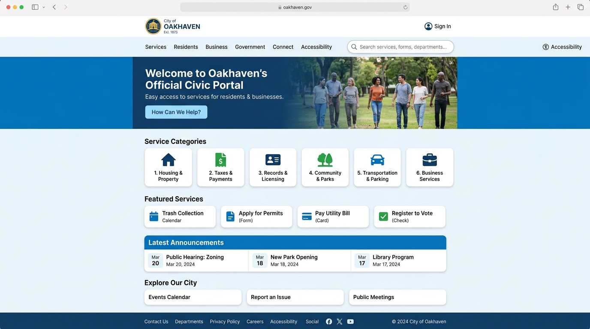
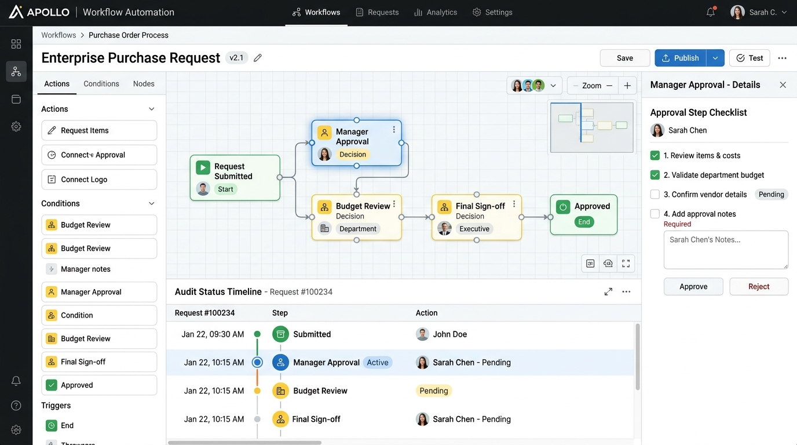

Web Development for Businesses That Need More Than Just a Website
We create and engineer websites which are fast, secure, scalable and based on real business requirements; for corporate and institutional websites as well as government portals and content-rich digital platforms we develop websites that are designed to perform today and will be able to evolve in the future.
 Corporate Websites
Institutional Websites
Government Websites
CMS Development
Web Portals
Corporate Websites
Institutional Websites
Government Websites
CMS Development
Web Portals
Websites Built Around Business Requirements
We integrate design, technology, content organisation and development to create websites that are useful for the people who use them and practical for the organisations that have to manage them.

Corporate Websites
Professional, scalable websites that clearly communicate your organisation, its capabilities, products and services, while supporting long-term business growth.

Institutional Websites
Structured digital platforms for educational institutions, associations, foundations and other organisations which manage large amounts of information.

Government Websites & Portals
Websites that are accessible, well-structured and easy to maintain and are designed with government requirements, content governance, multilingual information and compliance issues in mind.

Content-Rich Websites
Sites that have large information structures, numerous sections, publications, resources, news, events and other content which is frequently updated.
Designed Well. Engineered Better.
A website if it is to be successful requires more than simply visual appeal. Design, performance, accessibility, security, search visibility, content management and technology must work together. At Parivartan, designers and developers work together throughout the project so the experience developed during the design stage can be properly brought into development.
Responsive Development
Websites built to give the same experience on desktop, tablet and mobile devices.
Performance
Development practices focus on page speed, efficient code, optimised assets and a responsive user experience.
Security
Security considerations are included throughout the development process, in the technology architecture and during the ongoing maintenance of the platform.
Scalability
We design websites so new sections, features, integrations and content can be added as requirements change.
Accessibility
When necessary, websites can be designed and developed in accordance with accessibility standards and the relevant government or organisational guidelines.
Search-Ready Architecture
When developing a website, we consider its technical structure, semantic content, performance and structured information to ensure it provides a solid foundation for SEO, AEO and GEO.
Content Management That Gives You Control
Your team shouldn’t need a developer every time something changes. For websites that need regular updates, we create content management systems that let authorised users manage relevant website content through a structured administrative interface.
The CMS is designed to meet the organisation's real content and workflow needs, rather than forcing each project into the same administrative structure.
Technology Selected for the Requirement
We don’t believe every website should be built with the same technology. For each project, we recommend the technology stack according to the requirements rather than sticking to a predetermined platform.
React
Frontend InterfacesJS / TypeScript
Robust EngineeringPHP
Dynamic BackendPython
Scalable SystemsWordPress
Custom CMSMySQL
Relational DataPostgreSQL
Enterprise DatabaseMongoDB
Document StorageREST APIs
Interconnected ServicesIntegrations
Third-Party SystemsFrom Requirement to Launch
The process we follow in web development is designed so that the business objectives, user experience and technology all stay aligned during the project.
Understand
Discovery sessions, user requirements, business goals and stakeholder alignment.
Plan
Information architecture, sitemaps, user journeys and technical specifications.
UI/UX Design
Wireframing, visual design systems, component libraries and responsive prototypes.
Development
Clean frontend implementation, backend architectures and custom CMS programming.
Content Integration
Structured content migration, semantic formatting and media asset optimisation.
Testing
Cross-browser QA, mobile responsiveness, speed audit, security review and compliance.
Deployment
Production hosting setup, DNS management, SSL certificates and search engine indexing.
Support
Ongoing maintenance, security patches, performance monitoring and technical enhancements.
Websites Designed to Be Found
Building a technically sound website is only one part of the task; search engines and AI-powered discovery systems must also understand the organisation, its content and the relationships between the information on the website.
Technical SEO Foundations
Fast core web vitals, clean crawlable architecture, metadata schemas and semantic tags.
Search-Friendly Site Architecture
Hierarchical structure and intuitive breadcrumbs allowing search engines to index deeper pages.
AEO-Ready Content Structure
Structured answers, FAQs and Schema.org markup formatted for rich snippets and answer engines.
GEO & AI Search Considerations
Clear entity definition and machine-understandable authority so AI models cite your business.
What is Parivartan's Approach to Web Development?
Because we’ve been building for the web for more than two decades. Since Parivartan started in 2002, technology has changed a great deal. But the basic principles have remained the same: understand the requirement, select the technology carefully, build responsibly and support what you create.
Years of Experience
Proven technology partner delivering web engineering excellence since 2002.
Design + Development Together
Designers and developers collaborate continuously for unified digital execution.
Complex Requirements
Specialized in intricate information structures, custom workflows and integrations.
Institutional Experience
Trusted by government bodies, universities and large institutions for compliant portals.
Long-Term Support
Dedicated maintenance, ongoing enhancements and security lifecycle management.
Questions Businesses Ask Us About Web Development
Answers to frequently asked questions about website architecture, custom CMS, government compliance, technologies and maintenance.
1. Which kinds of websites does Parivartan develop?
Parivartan creates corporate websites, institutional websites, websites for the government, content-rich platforms, web portals, e-commerce websites and other custom web solutions.
We also offer custom application development for any requirements which involve complex business logic, workflows or operational systems.
2. Does Parivartan build custom websites or use templates?
We offer development work that is custom-designed as well as solutions based on a platform, according to the requirements of the project.
For any organisation that needs a unique user experience, a complicated content structure or custom functionality, the website can be designed and developed in accordance with those requirements rather than being limited by a standard template.
3. Which technologies do you use for website development?
Our capabilities in terms of development include React, JavaScript, TypeScript, PHP, Python, WordPress, MySQL, PostgreSQL, MongoDB, APIs and other technologies.
The technology stack is chosen on the basis of the project's requirements regarding functionality, scale, security, integration and maintenance.
4. Can you redesign and redevelop an existing website?
Yes, we are able to assess the design of an existing website, its user experience, content structure, technology, performance and search readiness and advise on whether it should be improved, migrated or entirely rebuilt.
5. Can you develop websites with a custom CMS?
Yes, we create custom content management functionality whenever an organisation's needs cannot be properly met by means of a standard CMS.
The way in which the administrative system is organised can be based on specific content types, user roles, publishing procedures and organisational workflows.
6. Does Parivartan develop government websites?
Yes. Parivartan has experience designing, developing and maintaining websites and digital services for government and public-sector organisations.
Depending on the project, requirements may include multilingual content, accessibility, structured content management, security considerations, government hosting environments and applicable compliance guidelines.
7. Can you develop multilingual websites?
Yes. We can design and develop websites that support multiple languages, including content management structures that allow authorised teams to maintain different language versions.
8. Will my website be SEO-friendly?
Yes. Technical SEO considerations such as site architecture, semantic structure, metadata, performance, crawlability, structured data and mobile responsiveness can be incorporated into the website during development.
Ongoing SEO, AEO and GEO are separate activities that can continue after the website is launched.
9. Can you integrate third-party systems and APIs into a website?
Yes. Depending on the project requirements, we can integrate websites with APIs, payment systems, CRM platforms, external databases, communication services and other third-party systems.
Requirements involving extensive integrations or complex business processes may be handled as part of our Custom Applications capability.
10. Do you provide website hosting and maintenance?
Yes. Depending on the project, Parivartan can provide hosting support, SSL management, backups, security updates, technical maintenance, monitoring and ongoing enhancements.
11. Do you work with international clients?
Yes. Parivartan works with businesses and organisations in India and international markets, with technology solutions delivered across 20+ countries.
Projects can be managed remotely from discovery and design through development, deployment and ongoing support.
12. How long does it take to develop a website?
The timeline depends on the size of the website, number of unique interfaces, content readiness, CMS requirements, integrations and functionality.
A focused corporate website may require considerably less time than a multilingual institutional website or a large government platform. We define the project scope and estimated timeline after understanding the requirement.
Have a Website or Digital Platform to Build?
Whether you’re creating a new website, modernising an existing platform or managing a complex digital presence, let’s build technology that works for your organisation today and can evolve with it tomorrow.
Quick 15-minute call
Let's discuss how we can engineer your web platform for maximum performance.